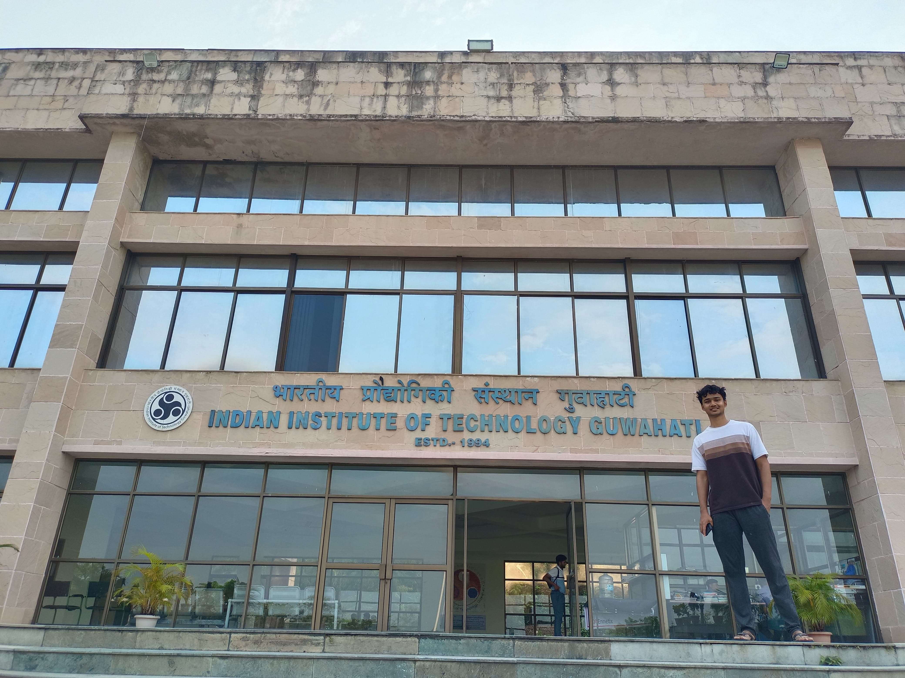
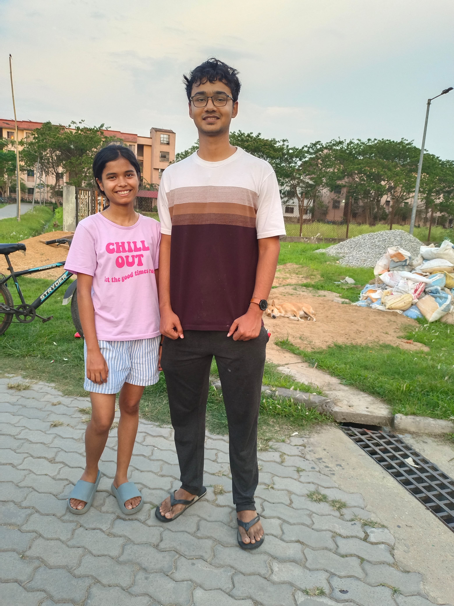

To My Best Companion

Thank you for being real and honest with me, for always showing me the bitter truth. Our friendship has gone through many phases, for me all of them are memorable.
You've always taught me, whether through words or by doing.
Thank you for the TT sessions, for taking me to my first movie (Rocketry), my first bowling.
We’ve made so many memories together whether it was having golgappee after lab…
having 100% library attendance…carrying your cycle from hospital to Khokha…
writing lab reports…Lohit ka dosa… post-dinner walks…
running through the city to catch ferry…discussing carrom development on ferry…
movie outings (I’m sure you’ve lost count too).
Thank you for always listening to me and giving me a space where I could share freely.
Thank you for not minding my words (though sometimes you did).
I’ll never forget your call right before the interview, you know how much that meant to me.
Whatever I achieved in college wouldn't have been possible without your support and company.
Bhai tu alag hai, but not in the way people think (Ikyk).
The best thing about you is that you always keep your competition fair, unlike the rest of the world, person with pure intension.
And obviously, you don’t drink.
I know there are even more good memories ahead…
Waiting for my canvas, I hope you are working :)
